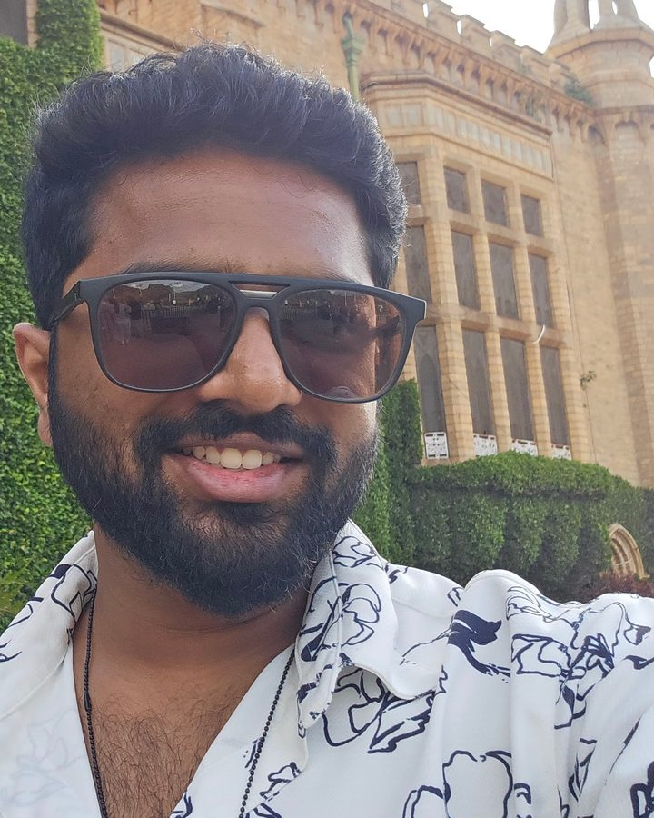
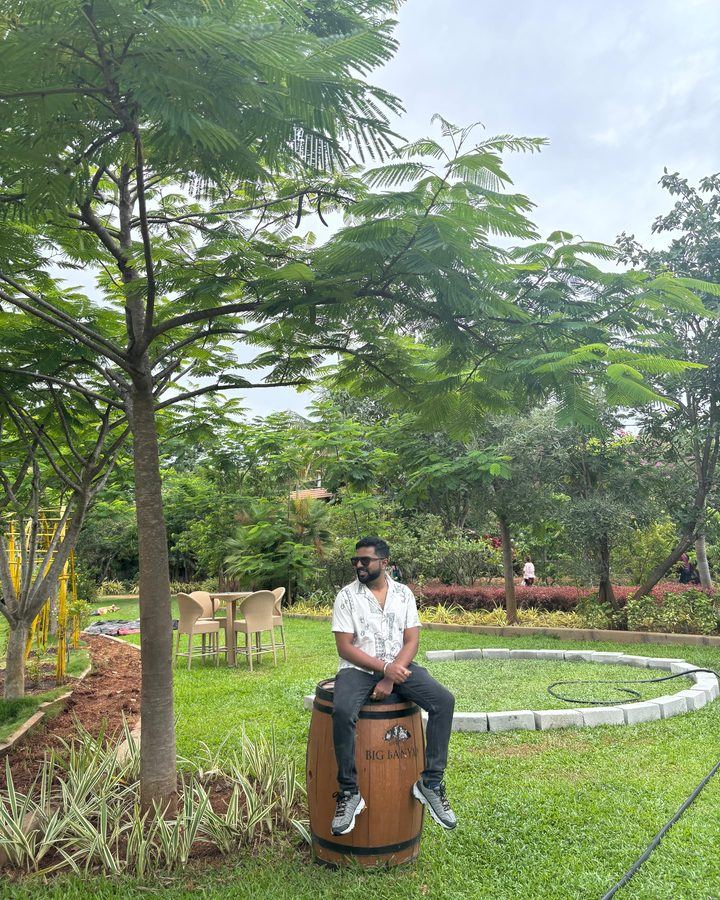

research-hub / ecosystem
01
Research agent
Chat for medical & internal research
02
SharePoint
Verified files only
03
Qdrant index
Metadata filters · hybrid retrieval
04
Dashboard + chat
Live web + internal index
“Latest evidence on …” → web links + internal doc paths< 30s
bellance / outlet-graph
bellance / intervention-ledger
| # | recommendation | owner | outcome | impact |
|---|---|---|---|---|
| 0412 | haircut → hair spa | approved | adopted | tracked |
| 0411 | win-back · 60d lapsed | approved | returned | tracked |
| 0410 | beard trim → facial | skipped | n/a | · |
| 0409 | colour refresh · 6w | approved | adopted | tracked |
₹330K+recoverable leakage found · 4 months of data


knowl / request-path
clients1M/day
fastapi gatewayEC2+GKE
redis limiterP95
agent → fallback+45%
velocloud / fleet-telemetry
200,000+edge devices · live interface state
document-podcast.onrender.com
Host Aspeaking
Host Blistening
EnglishDanskstaged scriptrepetition checks
notes / qwen3.5-4b on mac mini
no MLX
13.13 tok/s
MLX
27.71 tok/s
~2.1× faster · 4m39s → 1m43s total